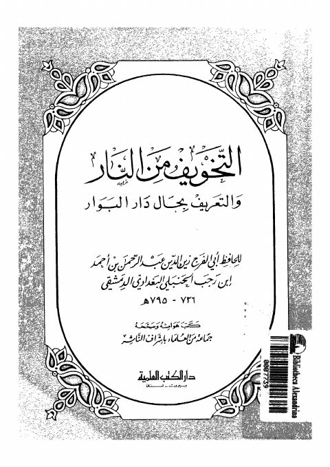

Downloads need an internet connection.
التخويف من النار والتعريف بحال دار البوار
Authors: ابن رجب الحنبلي
Publishers: دار الكتب العلمية
**▫️ العنوان: التخويف من النار والتعريف بحال دار البوار** ▪️ المؤلف: #أبو_الفرج_زين_الدين_عبد_الرحمن_بن_أحمد_ابن_رجب_الحنبلي_االبغدادي_الدمشقي ▫️ الناشر: #دار_الكتب_العلمية ▪️ تاريخ النشر: 1408 -1988 ▫️ بلد النشر: بيروت، #لبنان ▪️ الطبعة: 2 ▫️ عدد الأجزاء: 1 ▪️ الصفحات: 236 ▫️ نوع الوعاء: #كتاب ▪️ التصنيف الرئيسي: #الزهد_والرقائق ۪